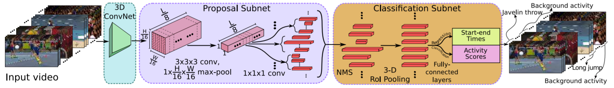
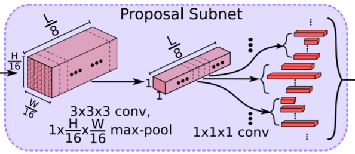
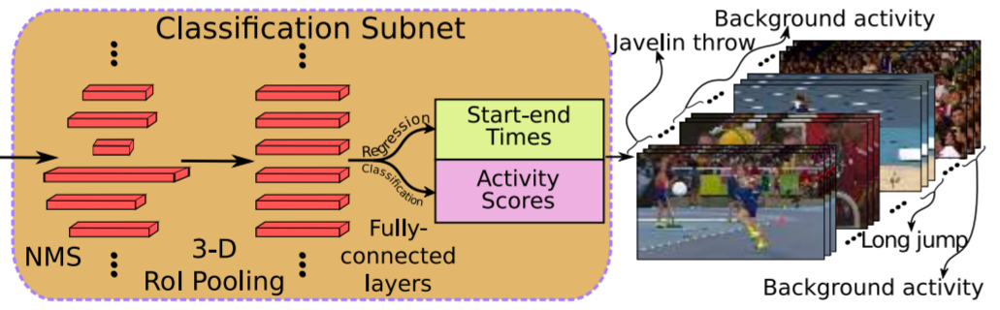

作者提出了R-C3D模型用于连续视频的行为检测(Activity Detection in Continuous Videos)。连续视频的行为检测需要完成两个目标：
- 识别出行为的类别
- 定位行为发生的时间范围
这两个问题正是R-C3D着力解决的。
术语缩写
| 缩写 | 全称 |
|---|---|
| R-C3D | Region Convolutional 3D Network |
| RoI | Region of Interest |
| RPN | Pegion Proposal Network |
R-C3D 的特点
- 端到端的训练方式；
- 可以检测出任意时长的行为；
- 检测速度快，一次性能计算的帧仅受限于GPU内存；
- 推广Faster-RCNN的Region Proposal Network到时域；
- 推广Faster-RCNN的RoI Pooling算法到时域，提出3D RoI Pooling。
- 有监督学习(特别之处是允许一个视频中包含多种行为，且行为的时间范围有重叠)
R-C3D 的网络结构


作者提出的 R-C3D 网络包含3个组件：
- a shared 3D ConvNet feature extractor
- a temporal proposal stage
- an activity classification and refinement stage
3D Convolutional Feature Hierarchies
Input: sequence of RGB video frames with dimension $\mathbb{R}^{3 \times L \times H \times W}$.
- The input to the model is of variable length ($L$ can be arbitrary and is only limited by memory)
- Adopt the convolutional layers (conv1a to conv5b) of C3D
- 本例中，$H=W=112$
Output: a feature map $C_{conv5b} \in \mathbb{R}^{512 \times \frac{L}8 \times \frac{H}{16} \times \frac{W}{16} }$ (512 is the channel dimension of the layer conv5b) (activations)
- $C_{conv5b}$ activations are the shared input to the proposal and classification subnets.
Temporal Proposal Subnet

Function: predicts potential proposal segments with respect to anchor segments and a binary label indicating whether the predicted proposal contains an activity or not.
- The anchor segments are pre-defined multi-scale windows centered at $L/8$ uniformly distributed temporal locations.
- Each temporal locaiton specifies $K$ anchor segments, each at a different fixed scale. Thus, the total number of anchor segments is $(L/8) * K$ .
- a 3D convolutional filter with kernel size $3 \times 3 \times 3$ on top of $C_{conv5b}$ to extend the temporal proposal subnet.
- a 3D max-pooling filter with kernel size $1 \times \frac{H}{16} \times \frac{W}{16}$ to downsample the spatial dimensions (from $\frac{H}{16} \times \frac{W}{16}$ to $1 \times 1$) to a temporal only feature map $C_{tpn} \in \mathbb{R}^{512 \times \frac{L}8 \times 1 \times 1}$.
- The 512-dimensional feature vector at each temporal location ($512 \times 1 \times 1 \times 1$) in $C_{tpn}$ is used to predict :
- a relative offset $\{ \delta c_i, \delta l_i \}$ to the center location
- the length of each anchor segment $\{ c_i, l_i \},\, i \in \{ 1, \cdots, K \}$
- the binary scores for each proposal being an activity or background
- two $1 \times 1 \times 1$ convolutional layers on top of $C_{tpn}$ to predict proposal offsets and scores.
Training Temporal Proposal Subnet
- Positive Label:
- if the anchor segment overlaps with some ground-truth activity with IoU > 0.7.
- or if the anchor segment has the highest IoU overlap with some ground-truth activity.
- Negative Label:
- if the anchor has IoU overlap lower than 0.3 with all ground-truth activities
- All others are held out from training
- sample balanced batches with a positive/negative ratio of 1:1
Activity Classification Subnet

Functions:
- selecting proposal segments from the previous stage.
- three-dimensional region of interest (3D RoI) pooling to extract fixed-size features for selected proposals.
activity classification and boundary regression for the selected proposals based on the pooled features.
greedy Non-Maximum Suppression (NMS, threshold=0.7) to eliminate highly overlapping and low confidence proposals.
3D RoI Pooling
- 对于一个 $l \times h \times w$ 的不定输入张量（每次输入的张量的尺寸可以不一样），3D RoI Pooling 将其规约到固定的大小 $l_s \times h_s \times w_s$ .
- $l \times h \times w$ 先被分成 $l_s \times h_s \times w_s$ 个大小约为 $\frac{l}{l_s} \times \frac{h}{h_s} \times \frac{w}{w_s}$ 的小张量，每个张量内做max pooling 得到 $l_s \times h_s \times w_s$ 的张量。
- 在本例中，由于$H=W=112$，$C_{conv5b} \in \mathbb{R}^{512 \times \frac{L}8 \times 7 \times 7}$，将 $512 \times \frac{L}8 \times 7 \times 7$ 的张量固定为 $512 \times 1 \times 4 \times 4$.
- The output of the 3D RoI pooling is fed to a series of two fully connected layers.
- 3D RoI pooling 的两层 fully connected layers 之后是 classification layer 和 regression layer.
- classification layer 和 regression layer 是两个独立的双层 fully connected layers, 它们的输入都是 3D RoI pooling 后 fully connected layers 的输出。
Training Classification Subnet
- Positive Label:
- if the proposal has the highest IoU overlap with a ground-truth activity and IoU > 0.5.
- Negative Label:
- proposals with IoU overlap lower than 0.5 with all grouth-truth activities.
- Positive : Negative = 1 : 3
Optimization
Loss Function: $$ Loss = \frac1{N_{cls}} \sum_i L_{cls}(a_i, a_i^*) + \lambda \frac1{N_{reg}} a_i^* L_{reg}(t_i, t_i^*) $$
where,
- $L_{cls}$ is softmax loss function
- $L_{reg}$ is smooth L1 loss function
- $N_{cls}$ is batch size
- $N_{reg}$ is the number of anchor/proposal segments
- $\lambda$ is the loss trade-off parameter and is set to 1.
- $i$ is the anchor/proposal segments index in a batch
- $a_i$ is the predicted probability of the proposal or activities
- $a_i^*$ is the ground truth
- $t_i = \{ \delta \hat{ c_i} , \delta \hat{ l_i} \}$ represents predicted relative offset to anchor segments or proposals.
- $t_i^* = \{ \delta c_i , \delta l_i \}$ represents the coordinate transformation of ground truth segments to anchor segments or proposals.
$$
\begin{cases}
\delta c_i = (c_i^* - c_i) / l_i \\
\delta l_i = \log (l_i^* / l_i)
\end{cases}
$$
where $c_i$ and $l_i$ are the center location and the length of anchor segments or proposals while $c_i^*$ and $l_i^*$ denote the same for the ground truth activity segment.
- The above loss function is applied for both the temporal proposal subnet and the activity classification subnet.
- In proposal subnet,
- $L_{cls}$ predicts whether the proposal contains an activity or not.
- $L_{reg}$ optimizes the relative displacement between proposals and ground truths.
- In classification subnet,
- $L_{cls}$ predicts the specific activity class for the proposal. (The number of classes are the number of activities + one for background)
- $L_{reg}$ optimizes the relative displacement between activities and ground truths.
Prediction
- 预测出$t_i$后需要逆变换把相对坐标变成绝对坐标。
- 为了充分利用向量化实现的优势，用最后一帧去填充视频较短不足的部分。
- NMS at a lower threshold (0.1 less than the mAP evalution threshold) is appled to the predicted activities to get the final activity predictions.
Experiments
Experiments on THUMOS’14
- divide 200 untrimmed videos from the validation set into 180 training and 20 held out videos to get the best hyperparameter setting.
- Since the GPU memory is limited, the authors first create a buffer of 768 frames at 25 fps which means approximately 30 seconds of video.
- The authors create the buffer by sliding from the beginning of the video to the end, denoted as the “one-way buffer”. An additional pass from the end of the video to the beginning is used to increase the amount of training data, denoted as “two-way buffer”.
- initialize the 3D ConvNet part of our model with C3D weights trained on Sports-1M and finetuned on UCF101.
- allow all the layers of R-C3D to be trained on THUMOS’14 with a fixed learning rate of 0.0001.
- K = 10, with scale values [2, 4, 5, 6, 8, 9, 10, 12, 14, 16]
Experiments on ActivityNet
- sample frames at 3fps
- input buffer: 768
- K=20, with scale values [1, 2, 3, 4, 5, 6, 7, 8, 10, 12, 14, 16, 20, 24, 28, 32, 40, 48, 56, 64]
Experiments on Charades
- sample frames at 5fps
- input buffer: 768
- K=18, with scale values [1, 2, 3, 4, 5, 6, 7, 8, 10, 12, 14, 16, 20, 24, 28, 32, 40, 48]